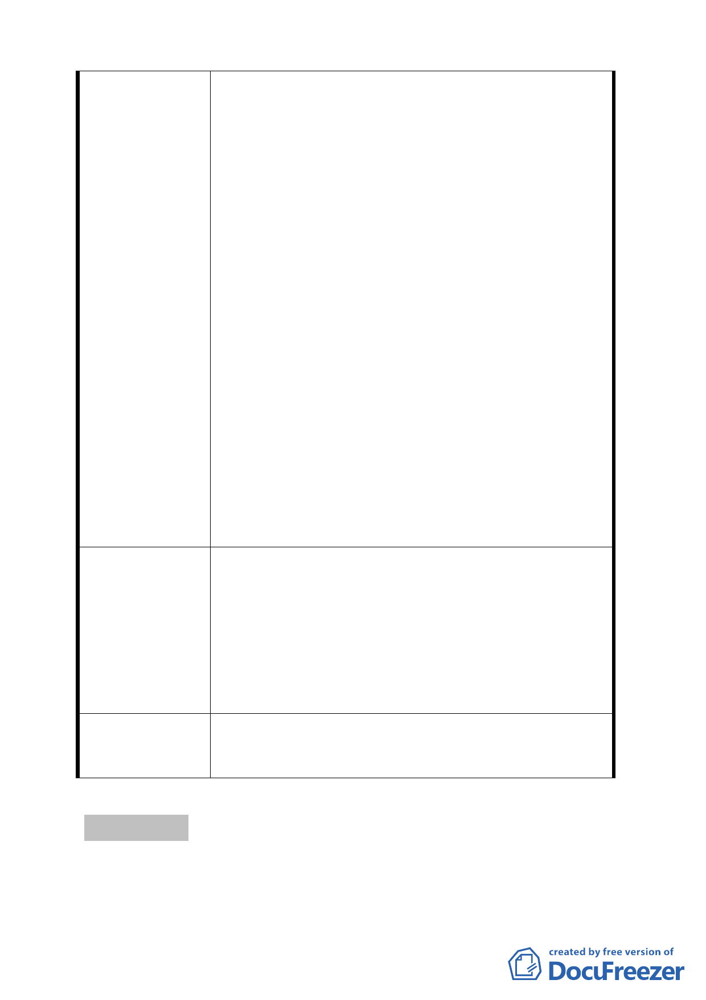

建議辦
委員會決議
有土地。」則台灣銀行土地於不使用時，應優先經 貴
府都市計畫委員會變更為「公園用地」公共利益必
要性審酌。
2. 台灣銀行辯稱係「公司」法人組織，得競標售該管
國有土地，經本事務所於招標前發函勸阻，置之不
理，得停止招標卻不停止。依民法第 148 條規定，
權利之行使，不得違反公共利益，明知 47-3、51-1、
53-4、54-1、59、60-3 等 6 筆土地為道路用地，土
地為公共設施，併住宅區四筆土地出售，違反都市
計畫法，國有財產法。
3. 依民法第 111 條規定，法律行為之一部分無效者，
全部無效，土地座落之土地使用分區與是否為公有
土地無關，標售無從部分生效，有回復原狀義務。
況住宅區四筆土地亦有理由變更其分區作為「公園
用地」使用。目前植物園內植物物種一望即知極擁
擠，全園區面積僅約 8.0 公頃，較台灣光復前 15.0
公頃面積縮小甚多，且為維護生態保育周邊土地不
宜興建住宅，確有變更為「公園用地」之必要。
4. 該項招標文件買賣既屬無效，土地權署應全部回復
原狀為台灣銀行所有視之，檢討變更使用分區為「公
園用地」，敬請 貴府都市計畫委員會審酌。
1. 敬請擴大本市都市計畫「變更臺北市中正區南海段
五小段 56-1 地號等 3 筆土地（植物園北側）道路用
地為公園用地細部計畫案」增列同段同小段 47-2、
法 47-3、51-1、51-3、53-4、54、54-1、55、59、60-3
等十筆土地面積約 4,115 平方公尺為「公園用地」。
2. 除上述範圍，再擴大該「公園用地」範圍達重慶南
路二段路邊，以符實際。
一、本變更道路用地為公園用地案照案通過。
二、至於產權標售等相關事宜，並未涉及本案討論範
圍。
討論事項 五
案名：劃定臺北市大安區龍泉段三小段 61-1 地號等 31 筆土地為更
新單元
- 10 -